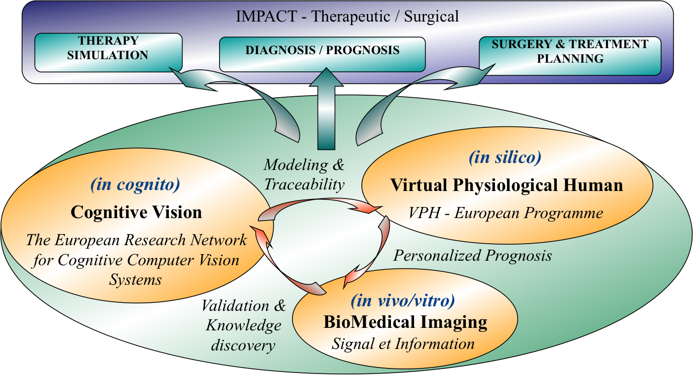

Scientific Challenge : BioMedical Image Understanding
The major scope of our research is to set the bases of symbolic cognitive high-content biomedical image analysis, by actively and continuously include medical explicit and implicit knowledge. This challenge deals with a tripolar approach considering the cognitive vision paradigms (in cognito) applied to the medical image (in- & ex-vivo) in the framework of the virtual physiological human (in silico) :

BioMedical Image Understanding (in Cognito – in Silico – in Vivo)
Multiscale and multimodal bioimage analysis and computer vision supported by medical visual semantics, constitute the core competence necessary to this approach. The exploration concerns high-throughput screening and high resolution macromodalities. Prognosis traceability and uncertainty management are considered as important elements enabling a constant implication of our medical partners and an effective translational approach. Integrating micro and macro modalities in the next generation of PACS and metadata management platforms, necessitates to go from the semiologic approaches towards operational morphogenetic models, by considering morphological, bio-physical and genetic aspects. This necessitates a close collaboration within multidisciplinary teams/projects.
Keywords: BioMedical Image Analysis, BioMedical Image Understanding, Multimodal Medical Image Fusion, Content-Based Medical Image Indexing and Retrieval, Diagnosis and Prognosis.
Translational challenges related to the proposed themes
Our scientific challenges can be grouped in three categories, related to partcular clinical challenges, all leaded in collaboration with local hospitals :
- High-content biomedical images understanding
- Breast cancer grading and visual reasoning for digital histopathology
- 3D stem cells traking
- 3D neurite tracing
- Medical image conceptualization for early detection, diagnosis and prognosis.
- Multimodal image indexing & analysis for Parkinson’s Disease prognosis.